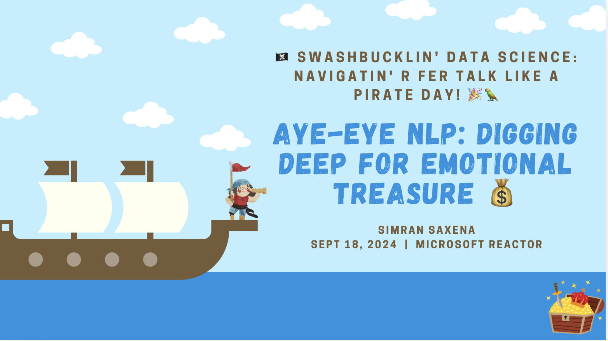
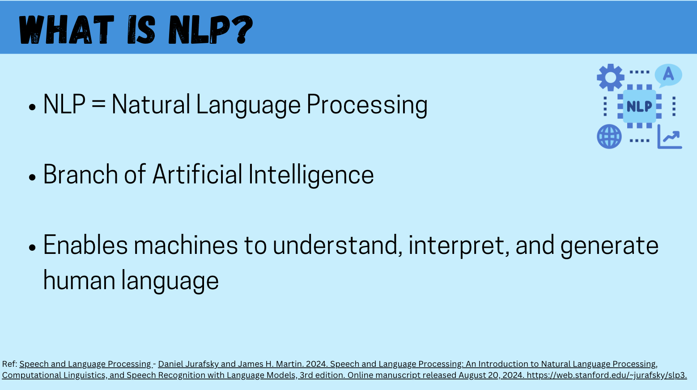
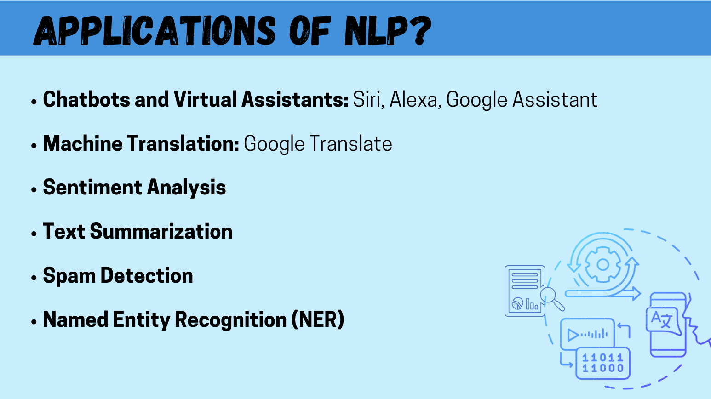
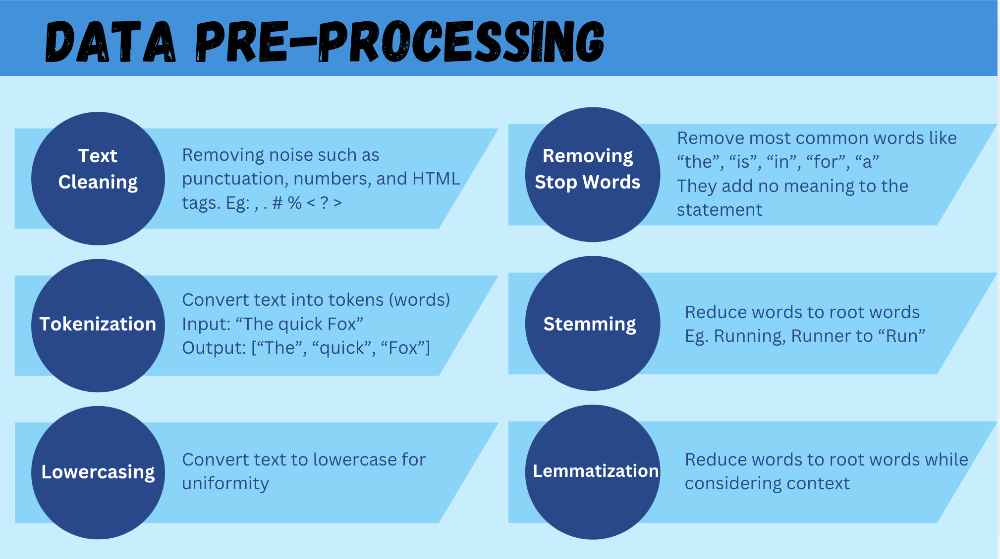
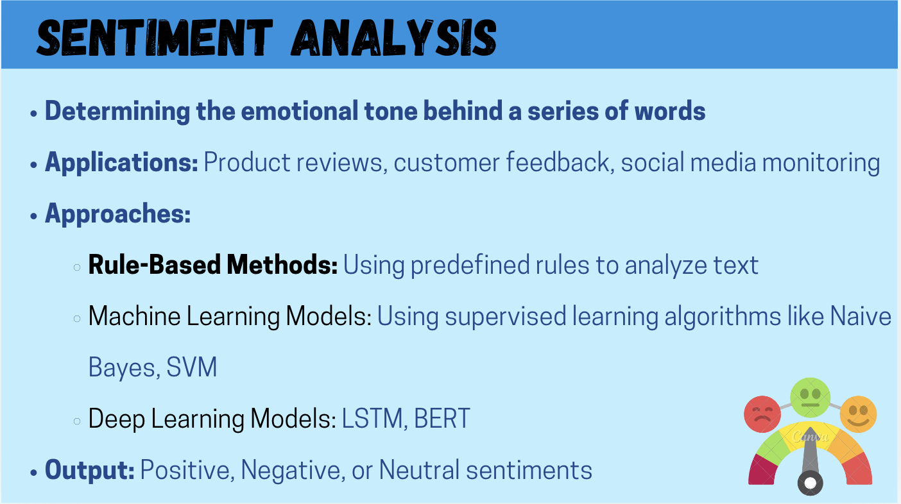
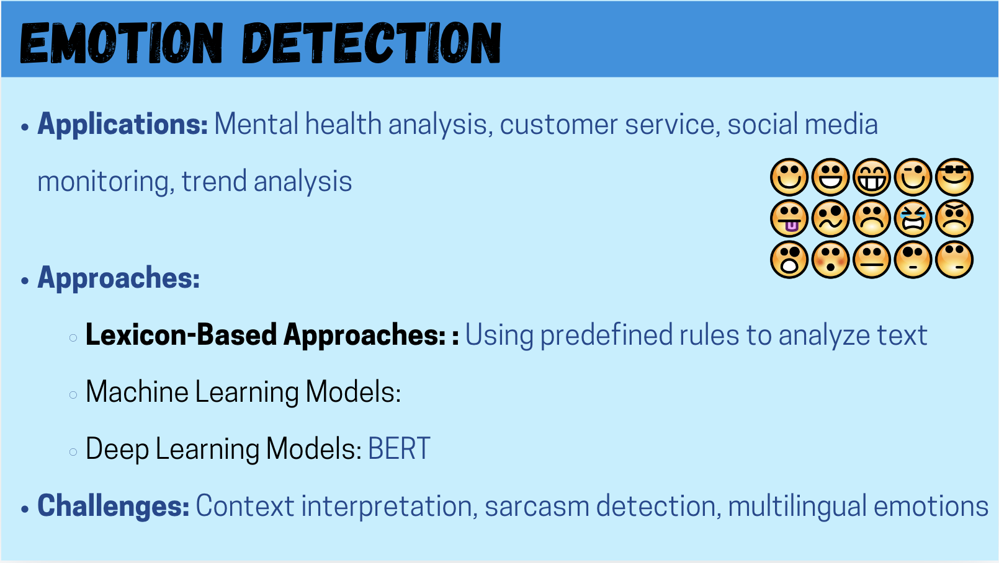
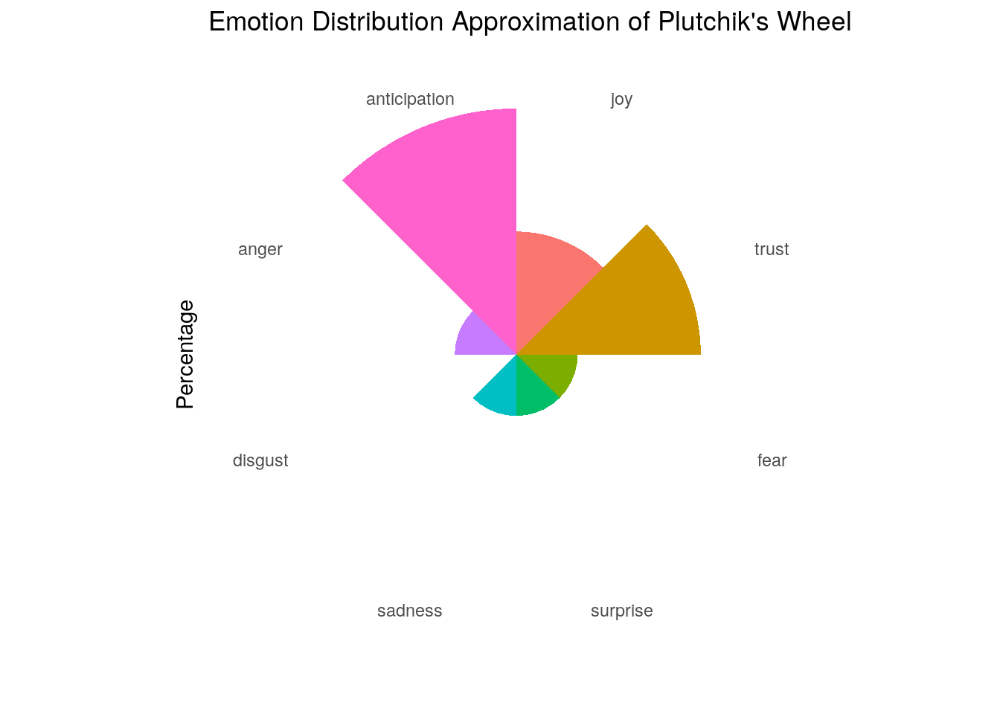

# Install packages (run if not already installed)install.packages(c("tidytext", "dplyr", "ggplot2", "syuzhet"))
Installing packages into '/usr/local/lib/R/site-library'
(as 'lib' is unspecified)
# Load packageslibrary(tidytext)library(dplyr)
Attaching package: 'dplyr'
The following objects are masked from 'package:stats':
filter, lag
The following objects are masked from 'package:base':
intersect, setdiff, setequal, union
library(ggplot2)library(syuzhet)
NLP in R



Loading Text for NLP
# Simulated text datatext_data <-data.frame(text =c("Ahoy, mateys! We set sailing at dawn.The Black Pearl is the fastest ship in the Caribbean.","No treasure is too big for Captain Jack Sparrow!","The sea was calm, but a storm is always brewing.","Savvy, you best start believing in ghost stories." ),stringsAsFactors =FALSE)# View the sample text dataprint(text_data)
text
1 Ahoy, mateys! We set sailing at dawn.The Black Pearl is the fastest ship in the Caribbean.
2 No treasure is too big for Captain Jack Sparrow!
3 The sea was calm, but a storm is always brewing.
4 Savvy, you best start believing in ghost stories.

# Install the 'tm' package if not already installedinstall.packages("tm")
Installing package into '/usr/local/lib/R/site-library'
(as 'lib' is unspecified)
# Load the 'tm' packagelibrary(tm)
Loading required package: NLP
Attaching package: 'NLP'
The following object is masked from 'package:ggplot2':
annotate
text
1 ahoy mateys set sailing dawnthe black pearl fastest ship caribbean
2 treasure big captain jack sparrow
3 sea calm storm always brewing
4 savvy best start believing ghost stories
Tokenize the text
# Tokenizationtokenized_data <- text_data %>%unnest_tokens(word, text)# View cleaned text dataprint(tokenized_data)
word
1 ahoy
2 mateys
3 we
4 set
5 sailing
6 at
7 dawn.the
8 black
9 pearl
10 is
11 the
12 fastest
13 ship
14 in
15 the
16 caribbean
17 no
18 treasure
19 is
20 too
21 big
22 for
23 captain
24 jack
25 sparrow
26 the
27 sea
28 was
29 calm
30 but
31 a
32 storm
33 is
34 always
35 brewing
36 savvy
37 you
38 best
39 start
40 believing
41 in
42 ghost
43 stories
word
1 ahoy
2 mateys
3 set
4 sailing
5 dawn.the
6 black
7 pearl
8 fastest
9 ship
10 caribbean
11 treasure
12 captain
13 jack
14 sparrow
15 sea
16 calm
17 storm
18 brewing
19 savvy
20 start
21 believing
22 ghost
23 stories


Using NRC Emotion Lexicon to extract sentiments and emotions from text
# Get emotion scoresemotion_scores <-get_nrc_sentiment(text_data$text)# Combine emotion scores with the original texttext_emotions <-cbind(text_data, emotion_scores)# View the combined dataprint(text_emotions)
text
1 Ahoy, mateys! We set sailing at dawn.The Black Pearl is the fastest ship in the Caribbean.
2 No treasure is too big for Captain Jack Sparrow!
3 The sea was calm, but a storm is always brewing.
4 Savvy, you best start believing in ghost stories.
anger anticipation disgust fear joy sadness surprise trust negative positive
1 0 2 0 0 1 1 1 1 1 1
2 0 1 0 0 1 0 0 1 0 2
3 1 0 0 0 0 0 0 0 1 2
4 0 1 0 1 0 0 0 1 0 2
Visualizing the Data
# Summing up the emotion scoresemotion_totals <-colSums(emotion_scores[, 1:8])# Convert to a data frameemotion_df <-data.frame(emotion =names(emotion_totals),count =as.numeric(emotion_totals))# View the emotion data frameprint(emotion_df)
# Order emotions to match Plutchik's model (if desired)emotion_order <-c("joy", "trust", "fear", "surprise", "sadness", "disgust", "anger", "anticipation")emotion_df$emotion <-factor(emotion_df$emotion, levels = emotion_order)# Calculate percentages for the chartemotion_df <- emotion_df %>%arrange(emotion) %>%mutate(percentage = count /sum(count) *100)# Plottingggplot(emotion_df, aes(x = emotion, y = percentage, fill = emotion)) +geom_bar(stat ="identity", width =1) +coord_polar() +theme_minimal() +labs(title ="Emotion Distribution Approximation of Plutchik's Wheel",x ="",y ="Percentage") +theme(axis.text.y =element_blank(),axis.ticks =element_blank(),panel.grid =element_blank(),legend.position ="none")

Plotting the Sentiment Data
# Select only positive and negative columns for plottingsentiment_data <- text_emotions %>%select(text, positive, negative)# Add an index for each text to make plotting easiersentiment_data <- sentiment_data %>%mutate(text_index =row_number())print(sentiment_data)
text
1 Ahoy, mateys! We set sailing at dawn.The Black Pearl is the fastest ship in the Caribbean.
2 No treasure is too big for Captain Jack Sparrow!
3 The sea was calm, but a storm is always brewing.
4 Savvy, you best start believing in ghost stories.
positive negative text_index
1 1 1 1
2 2 0 2
3 2 1 3
4 2 0 4
# Reshape the data for plotting using tidytext's gather-like operationsentiment_long <- sentiment_data %>% tidyr::pivot_longer(cols =c(positive, negative), names_to ="sentiment", values_to ="score")# Plot the sentiment scores using ggplot2ggplot(sentiment_long, aes(x =factor(text_index), y = score, fill = sentiment)) +geom_bar(stat ="identity", position ="dodge") +ggtitle("Positive and Negative Sentiment Scores per Text") +xlab("Text Index") +ylab("Sentiment Score") +scale_fill_manual(values =c("positive"="green", "negative"="red")) +theme_minimal()